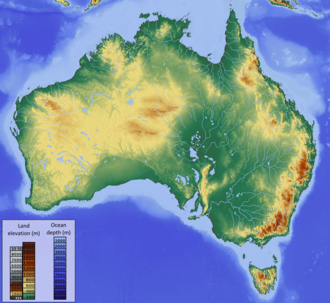
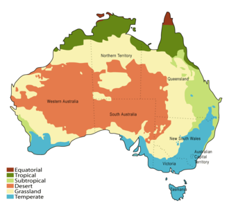
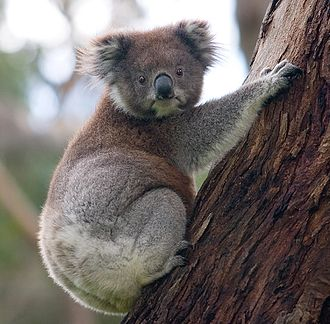

Australia History Pre History
Human habitation of the Australian continent is estimated to have begun between 42,000 and 48,000 years ago, possibly with the migration of people by land bridges and short sea-crossings from what is now Southeast Asia. These first inhabitants may have been ancestors of modern Indigenous Australians. At the time of European settlement in the late 18th century, most Indigenous Australians were hunter-gatherers, with a complex oral culture and spiritual values based on reverence for the land and a belief in the Dreamtime.

European arrival
The first recorded European sighting of the Australian mainland, and the first recorded European landfall on the Australian continent (in 1606), are attributed to the Dutch. The first ship and crew to chart the Australian coast and meet with Aboriginal people was the Duyfken captained by Dutch navigator, Willem Janszoon. He sighted the coast of Cape York Peninsula in early 1606, and made landfall on 26 February at the Pennefather River near the modern town of Weipa on Cape York. The Dutch charted the whole of the western and northern coastlines and named the island continent "New Holland" during the 17th century, but made no attempt at settlement. William Dampier, an English explorer and privateer, landed on the north-west coast of New Holland in 1688 and again in 1699 on a return trip. In 1770, James Cook sailed along and mapped the east coast, which he named New South Wales and claimed for Great Britain.
Australia - Geography
The geography of Australia encompasses a wide variety of biogeographic regions being the world's smallest continent but the sixth-largest country in the world. The population of Australia is concentrated along the eastern and southeastern coasts. The geography of the country is extremely diverse, ranging from the snow-capped mountains of the Australian Alps and Tasmania to large deserts, tropical and temperate forests. Neighbouring countries include Indonesia, East Timor and Papua New Guinea to the north, the Solomon Islands, Vanuatu and the French dependency of New Caledonia to the east, and New Zealand to the southeast.
 Australia's landmass of 7,617,930 square kilometres (2,941,300 sq mi) is on the Indo-Australian Plate. Surrounded by the Indian and Pacific oceans, it is separated from Asia by the Arafura and Timor seas, with the Coral Sea lying off the Queensland coast, and the Tasman Sea lying between Australia and New Zealand. The world's smallest continent and sixth largest country by total area, Australia—owing to its size and isolation—is often dubbed the "island continent",[91] and is sometimes considered the world's largest island. Australia has 34,218 kilometres (21,262 mi) of coastline (excluding all offshore islands), and claims an extensive Exclusive Economic Zone of 8,148,250 square kilometres (3,146,060 sq mi). This exclusive economic zone does not include the Australian Antarctic Territory.[94] Apart from Macquarie Island, Australia lies between latitudes 9° and 44°S, and longitudes 112° and 154°E.
 The climate of Australia is significantly influenced by ocean currents, including the Indian Ocean Dipole and the El Niño–Southern Oscillation, which is correlated with periodic drought, and the seasonal tropical low-pressure system that produces cyclones in northern Australia. These factors cause rainfall to vary markedly from year to year. Much of the northern part of the country has a tropical, predominantly summer-rainfall (monsoon)[103] The south-west corner of the country has a Mediterranean climate. The south-east ranges from oceanic (Tasmania and coastal Victoria) to humid subtropical (upper half of New South Wales). The interior is arid to semi-arid.
 Although most of Australia is semi-arid or desert, it includes a diverse range of habitats from alpine heaths to tropical rainforests, and is recognised as a megadiverse country. Fungi typify that diversity; an estimated 250,000 species—of which only 5% have been described—occur in Australia.Because of the continent's great age, extremely variable weather patterns, and long-term geographic isolation, much of Australia's biota is unique. About 85% of flowering plants, 84% of mammals, more than 45% of birds, and 89% of in-shore, temperate-zone fish are endemic. Australia has the greatest number of reptiles of any country, with 755 species. Besides Antarctica, Australia is the only continent that developed without feline species. Feral cats may have been introduced in the 17th century by Dutch shipwrecks, and later in the 18th century by European settlers. They are now considered a major factor in the decline and extinction of many vulnerable and endangered native species.
Australia - Economy
Australia is a wealthy country; it generates its income from various sources including mining-related exports, telecommunications, banking and manufacturing. It has a market economy, a relatively high GDP per capita, and a relatively low rate of poverty. In terms of average wealth, Australia ranked second in the world after Switzerland in 2013, although the nation's poverty rate increased from 10.2% to 11.8%, from 2000/01 to 2013. It was identified by the Credit Suisse Research Institute as the nation with the highest median wealth in the world and the second-highest average wealth per adult in 2013.
The Australian dollar is the currency for the nation, including Christmas Island, Cocos (Keeling) Islands, and Norfolk Island, as well as the independent Pacific Island states of Kiribati, Nauru, and Tuvalu. With the 2006 merger of the Australian Stock Exchange and the Sydney Futures Exchange, the Australian Securities Exchange became the ninth largest in the world.
Australia - Demographics
Until the Second World War, the vast majority of settlers and immigrants came from the British Isles, and a majority of Australians have some British or Irish ancestry. These Australians form an ethnic group known as Anglo-Celtic Australians. In the 2016 Australian census, the most commonly nominated ancestries were English (36.1%), Australian (33.5%), Irish (11.0%), Scottish (9.3%), Chinese (5.6%), Italian (4.6%), German (4.5%), Indian (2.8%), Greek (1.8%), and Dutch (1.6%).
Australia's population has quadrupled since the end of World War I, much of this increase from immigration. Following World War II and through to 2000, almost 5.9 million of the total population settled in the country as new immigrants. Most immigrants are skilled, but the immigration quota includes categories for family members and refugees. By 2050, Australia's population is currently projected to reach around 42 million. Nevertheless, its population density, 2.8 inhabitants per square kilometre, remains among the lowest in the world.